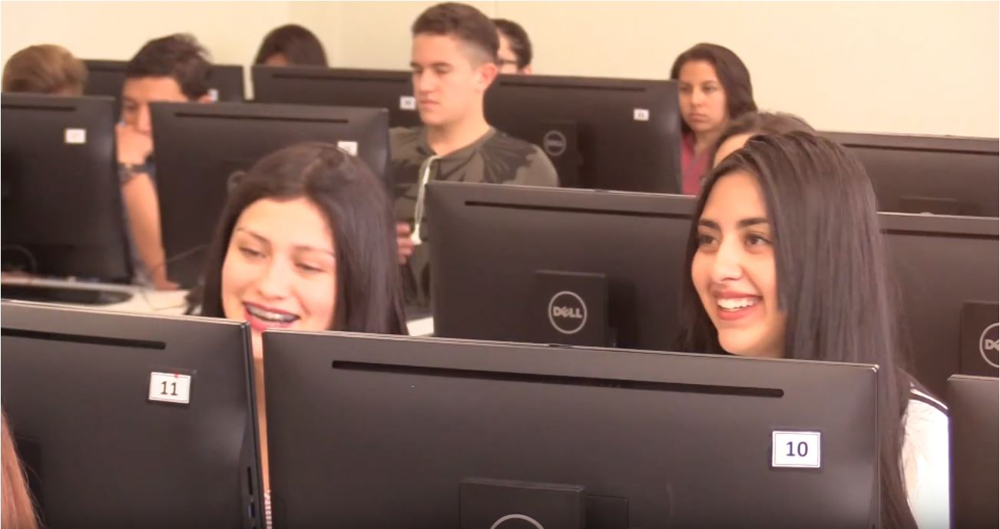

- En esta clase se veran las ultimas tecnologias para el desarrollo web en el mercado.
- La profesora Cindy Viviana Hernández Otálora, imparte esta materia

- El lenguaje usado en su mayoria en esta clase, es javascript.

- En esta clase veremos python, con el framework django.

- 
En este tipo de aulas se impartira la clase.
Cindy Viviana Hernández Otálora
Ingeniera de Sistemas - UPTC
Master en Ingeniería del Software de la
Universidad de los Andes
Maestrante en Tecnologías de la
información para el negocio - Uniandes